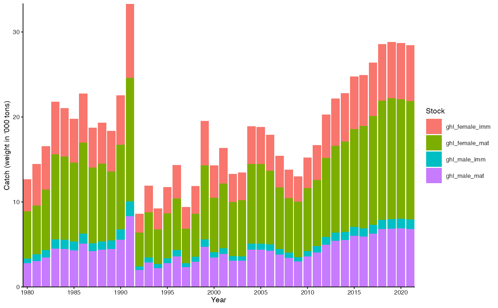
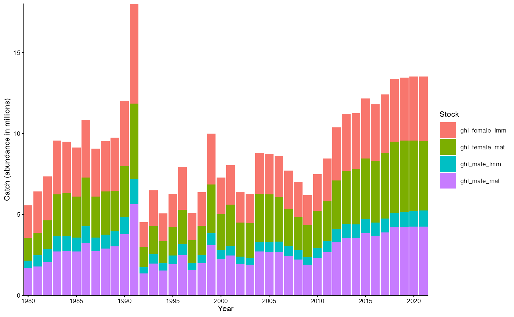
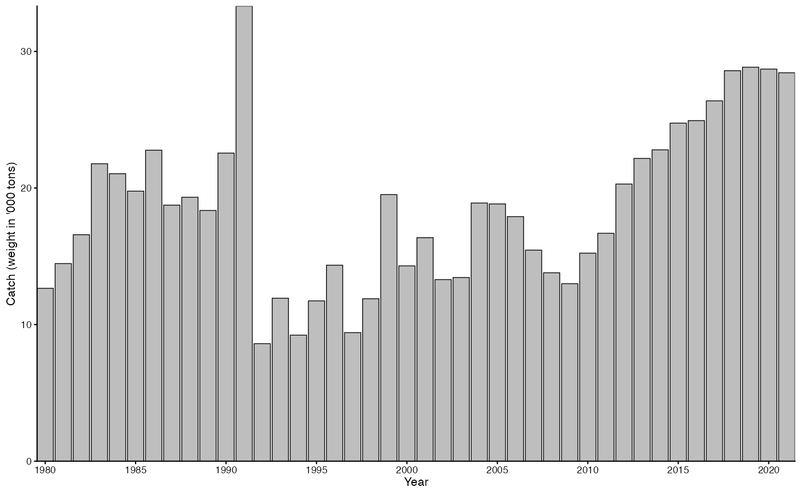
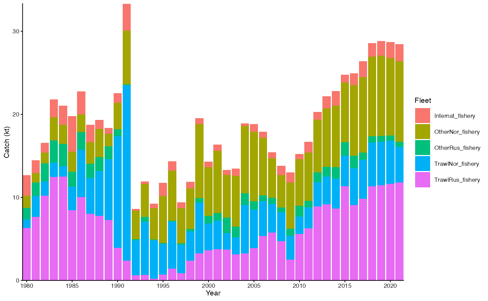
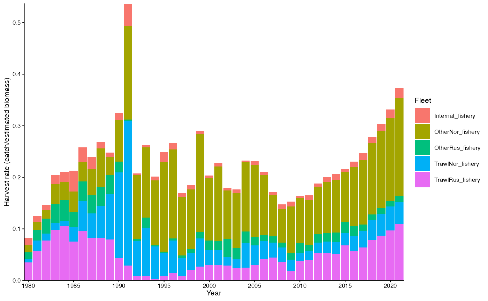

Plot catches
plot_catch.RdPlot catches
Arguments
- fit
A gadget fit object. See
g3_fit.- type
Character specifying the data type:
"stock"plots the catches by stock,"fleet"by fleet,"total"catches without separating to stock or fleet, and"hr"harvest rates by fleet.- biomass
Logical indicating whether biomass should be plotted instead of estimated abundance.
- base_size
Base size parameter for ggplot. See ggtheme.
- return_data
Logical indicating whether to return data for the plot instead of the plot itself.
Value
A ggplot object.
Examples
data(fit)
plot_catch(fit)

plot_catch(fit, biomass = FALSE)

plot_catch(fit, type = "total")
#> Ignoring unknown labels:
#> • fill : "Stock"

plot_catch(fit, type = "fleet")

plot_catch(fit, type = "hr")
